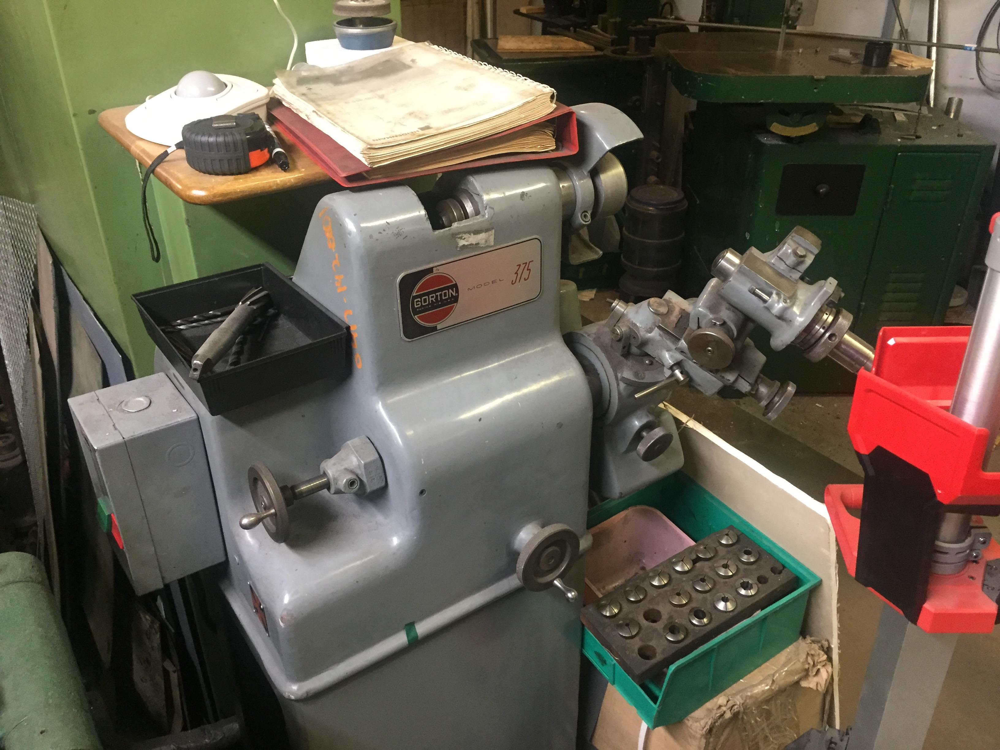

Mechanical chop saw for cutting stock.
Our Machine Shop
Our manual J-head Bridgeport
A Standard Modern 13" 'Utilathe'
Sunnen honing machine, used for honing engine blocks
Hermle UWF1000, with Heidenhain TNC355 control. We made an ersatz enclosure ourselves, which is still WIP.
Mechanical chop saw for cutting stock.

Norton D-bit grinder for making tools.
Brown and Sharpe Surface Grinder

18" Grob Bandsaw
Our large drill press.
SIP (Société d’Instruments de Précision, from Geneva, Switzerland) jig boring machine. Good to about 2 micron over it's range of travel.
Our 1981 Mori-Seiki SL-1 on the trailer from bringing it home. A portion of our large radial arm drill also shown.
The SL-1 moved into the shop, cat for scale. We removed much of the enclosure during installation, and never put it all back together for the time being.
Some equipment we keep in the barn, none of it fully set up yet. Left-to-right: BOY 22 ton injection molding machine, the Sunnen honing machine, and a Blue M furnace.
Our largest "Machine," our 1948 circular sawmill, with 60in. blade.
Big Allis; our largest piece of earthmoving equipment, an Allis-Chalmers HD11-G Tractor Shovel